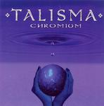

| Artist: | Talisma |
| Title: | Chromium |
| Label: | Unicorn UNCR-5023 |
| Length(s): | 43 minutes |
| Year(s) of release: | 2005 |
| Month of review: | [12/2005] |
| 1) | Qwhat | 6.18 |
| 2) | Dementia | 3.29 |
| 3) | Leviosa | 5.12 |
| 4) | Chromium | 3.52 |
| 5) | Nebuleuse | 2.48 |
| 6) | Nuclide | 2.57 |
| 7) | Inversion | 4.20 |
| 8) | Mobius | 1.57 |
| 9) | Tribajigue | 0.59 |
| 10) | Cumulus | 3.12 |
| 11) | Hindi | 4.14 |
| 12) | Double | 3.22 |
Leviosa takes a complex repeating guitar theme with more open synth melody weaved through, making for an odd mix that is not quite accessible, without being too far out either. As the track progresses it moves into an alternation between the original guitar theme played friendly and more aggresively, pushing. Without building the amount of tension Chromium takes the style of its predecessor to build on.
Nebuleuse opens with carrying synth, and surprisingly keeps it at this shortist track, with the sort of threatening atmosphere that can be found in Steve Roach's work too. Nuclide takes a fully different direction, starting out bass based, but adding in assorted string instruments in a layered fashion, making for an odd jingly feel.
Inversion is mostly melodically directed, with a happy guitar melody, jumped around by bass and drums making this into an accessible track that does manage to add in the complexity to make it interesting. Mobius is mostly an acoustic bit, making room for the Mexican sounding Tribajigue featuring fast guitar and bongo type percussion.
Hindi combines fast paced basses, once again in the front, duelling with guitar. Once again the Primus reference comes up, but there's a hint of a domesticized version of Dreadnaught as well. Not as quirky by some margin, but odd to say the least. Closer Double is a classical guitar bit, that makes for a nice closer. The second section of the track is probably more a ghost track, than that, being a duel between what futuristic synths sounded like in the early eighties and bass.